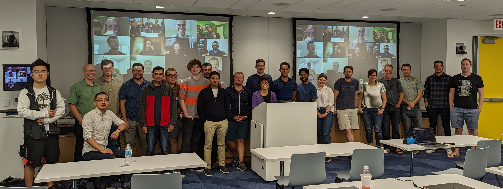

ParslFest 2023 - The Parsl Community Meeting (Oct 19-20)
The fifth ParslFest Community Meeting will be held as a hybrid meeting on October 19-20, 2023. It will start around noon on the 19th, with talks that day, and on the morning of the 20th. The afternoon of the 20th will be an open hacking session for hands-on work, hacking, testing, bring-your-own-code, etc. The in-person component will be held at the University of Chicago.
The meeting brings together researchers, developers, and cyberinfrastructure experts from around the world to discuss experiences using and developing Parsl and Globus Compute (formerly funcX) - a federated function-as-a-service platform related to Parsl.
Registration is free and we would love for you to present a lightning talk describing your work with Parsl or Globus Compute
We have some funding available to support travel (flights and accomodation) to the workshop. Please contact Kyle Chard (chard@uchicago.edu) for information.

Logistics
Registration (free): https://forms.gle/2VHarhjA7hHsVydHA.
Contact us at parsl@googlegroups.com.
Agenda
Thursday, October 19, 12 pm - 5 pm CDT (17:00 - 22:00 UTC)
12:00 - 12:50 pm Lunch12:50 pm - Welcome! - Kyle Chard, University of Chicago/Argonne National Laboratory.
1:10 pm - Session 1 (Chair: Ben Clifford)
- Alex Brace: Coupling Streaming AI and HPC Ensembles to achieve 100-1000x Faster Biomolecular Simulations
- Abdullah Syed: Integrating Parsl and OpenAI into Phylogenetic Workflows
- Sander Vandenhaute: Psiflow: An All-in-One Companion for Your Born-Oppenheimer Adventures
- Jianshu Liu: MoStream: Enabling Ml-Guided Molecular Simulations on Real-Time Stateful Stream Processing Systems
- Zilinghan Li: APPFLx.Link: Providing Privacy-Preserving Cross-Silo Federated Learning as a Service
- Paul Camacho: MaPPeRTrac: A Massively Parallel, Portable, and Reproducible Tractography Pipeline
- Dennis Trujillo: Globus Compute Workflows for AI in Radiology
- Logan Ward: Parsl for Intelligent Workflows on Exascale HPC
- Zhao Zhang: Diamond: Democratizing Large Neural Network Model Training for Science
- Jonathan Ozik: Developing Distributed High-performance Computing Capabilities of an Open Science Platform for Robust Epidemic Analysis
3:30 - Session 2 (Chair: Yadu Babuji)
- Dante Domizzi Sanchez Gallegos: Creating Services on the Edge-Fog-Cloud with Data Containers and Globus Compute
- Christine Simpson: Nexus: IRI Computing at ALFC with Globus Flows
- Mousa AbuGhosh: Introducing Falcon as a Parsl Data Provider
- Thanh Son Tran Phung: TaskVine and Parsl integration
- Alex Brace: Serving Scientific Foundation Models on Leadership Computing Platforms
- Aditya Dhakal: Spatial Sharing of GPU with Parsl
- Benjamin Galewsky: Building Apptainer Containers Using a Globus Compute Task
- Stefan Gary: The architecture for running Parsl multi-site workflows on the Parallel Works platform
- John Raicu: ParslDock: Accelerating Virtual Drug Screening with Parallelism and Machine Learning
- Ben Clifford: Code and Community
6:00 pm - Dinner and mini-golf at Puttery
Friday, October 20 14, 8:30 am - 1 pm CDT (13:30 - 18:00 UTC)
8:30 am - Breakfast9:00 am - Session 3 (Chair: Dan Katz)
- Josh Bryan: Where Globus Compute is Now and Where It's Headed
- Kevin Hunter Kesling: Globus Compute Multi-User Endpoint
- Reid Mello: Globus Compute: Running Tasks with globus_compute_sdk.Executor
- Yefei Li: UniFaaS: Programming across Distributed Cyberinfrastructure with Federated Function Serving
- Greg Pauloski: ProxyStore: a Data Fabric for Workflow Systems
- Will Engler: Garden: Using Globus Compute for AI Inference
- Matt Baughman: Automating FaaS-based Federated Learning
- Ved Kommalapati: TBD: Globus Compute (funcX) Executor in Parsl - Exploring the Intersection
- Douglas Friedel: Using Parsl and Globus Compute to Port Running Jobs Between HPC Resources
11:00 am - Session 4 (Chair: Kevin Hunter Kesling)
- Yadu Babuji: MPI support in Parsl and Globus Compute
- Christopher Harrop: Toward Diversified Workflows for Numerical Weather Prediction
- Devesh Tiwari: What to do when HPC FaaS problems stare in your face?
- Pete Mendygral: A High-Performance Parsl Executor Based on Dragon
- Wen Guan: Globus Compute integration with Harvester for PanDA jobs
- Temidayo Adeluwa: Parsl for parallelized inference
- Nathaniel Hudson: Hierarchical Federated Learning on Globus Compute using Flox
- Ben Clifford: 10000 to 1 (tasks per second) - How can some Parsl runs be so slow?
- Jamison Kerney: Supercharging Scientific Serverless: Slashing Cold Start Times with Python UniKernel
- Tyler Skluzacek: TBD
13:30 - Office hours/hackathon
Location (for in-person component)
JCL 298
John Crerar Library
5730 S. Ellis Ave
Chicago, IL 60637
map
Prior ParslFest Meetings
Parsl community meetings have brought together hundreds of researchers, developers, and cyberinfrastructure experts for meetings that included presentations and discussions.
The ParslFest 2019 page includes the agenda and all presentations (slides) from ParslFest 2019.
The ParslFest 2020 page includes the agenda and all presentations (slides and videos) from ParslFest 2020.
The Parsl & funcXFest 2021 page includes the agenda and all presentations (slides and videos) from Parsl & funcXFest 2021.
The Parsl & funcXFest 2022 page includes the agenda and all presentations (slides and videos) from Parsl & funcXFest 2022.